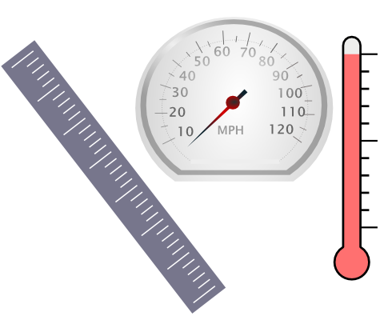

Annotate numbers and measurement expressions in text. This pipeline recognises many types of measurements including length, temperature, time and speed, and calculates their normalised values in the SI system of units. These annotations are ideal for indexing with Mímir, which supports queries in one unit matching results expressed in another.
As a side-effect this pipeline also annotates tokens and sentences.
| Default annotations | |||
| :Measurement | Measurement expressions, with features: | ||
| type | "scalar" for single measurements, or "interval" for intervals (e.g. "1 to 5 pounds") | ||
| unit | The unit of the measurement (gram, mile, ...) | ||
| value | The numeric value of the measurement quantity as specified in the text | ||
| normalizedUnit | The "normalized" unit for the measurement in the SI system (kilogram, metre, etc.) | ||
| normalizedValue | The equivalent value of the measurement in the normalized unit. For interval measurements this is replaced by a "normalizedMaxValue" and "normalizedMinValue" giving the end-points of the interval. | ||
| dimension | Speed, volume, area, time, etc. | ||
| Additional annotations available if selected | |||
| :Sentence | Sentences detected by the sentence splitter | ||
| :Token | The individual tokens of the text | ||
| :Ratio | Expressions denoting a ratio rather than a simple measurement, typically percentages but also expressions like "300 parts per million" | ||